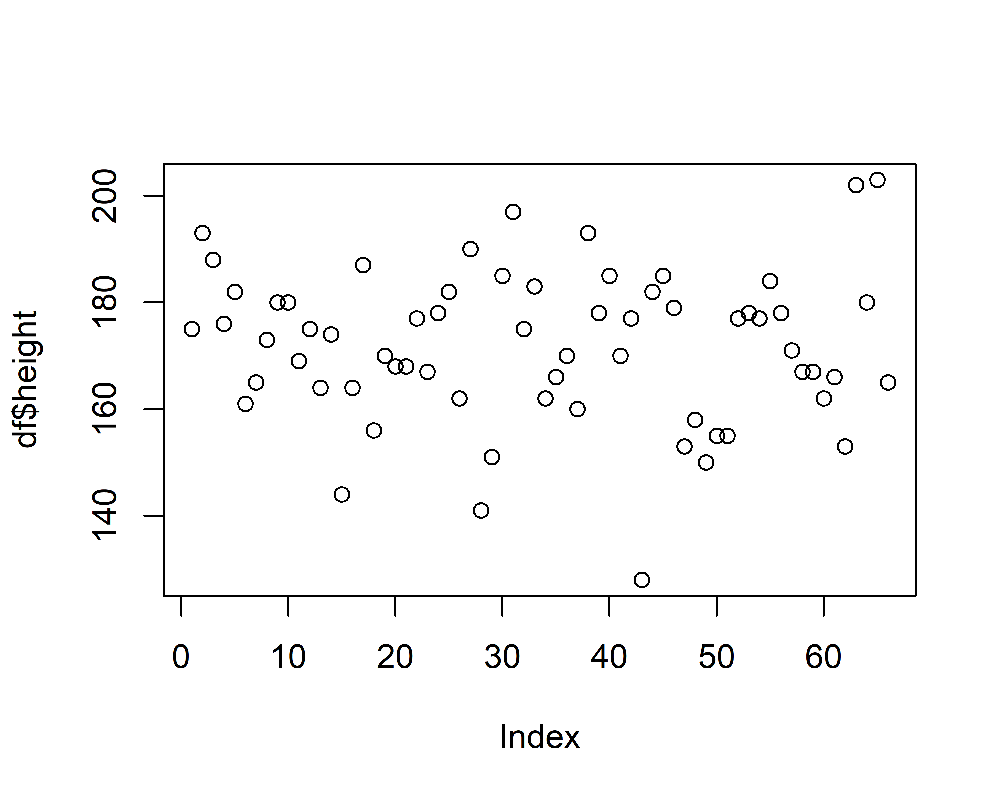
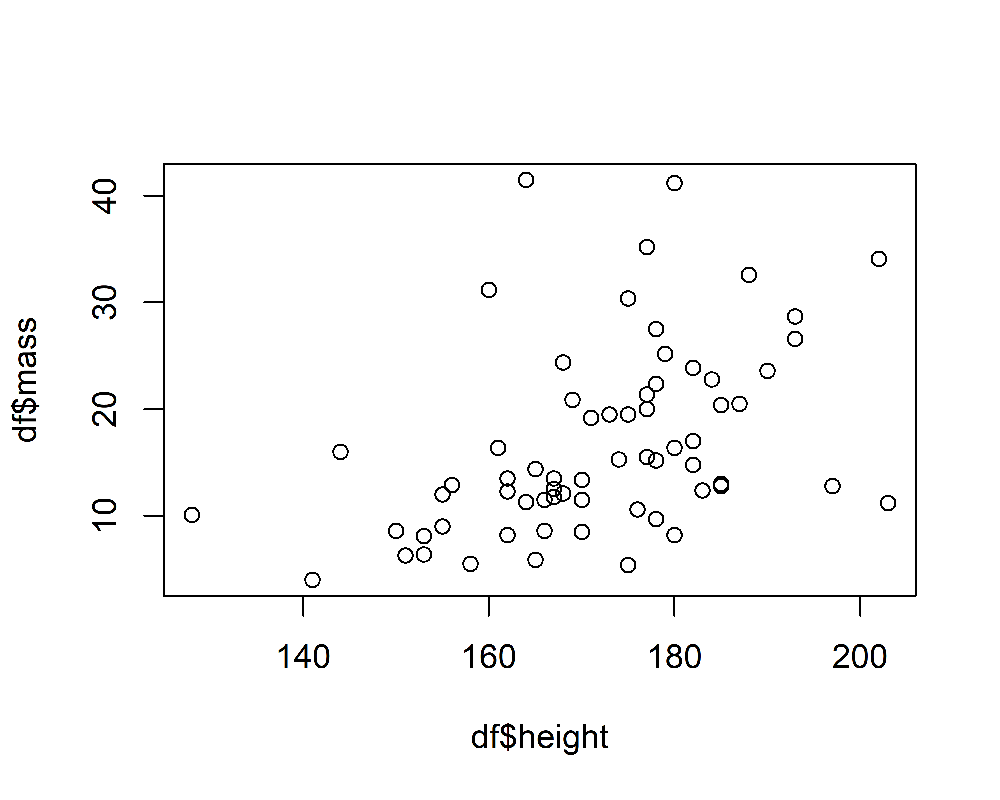
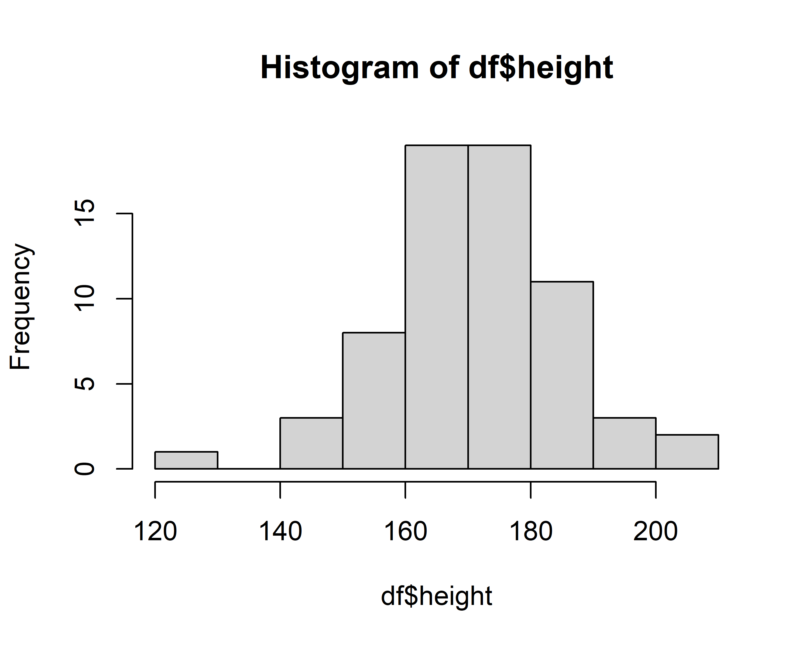
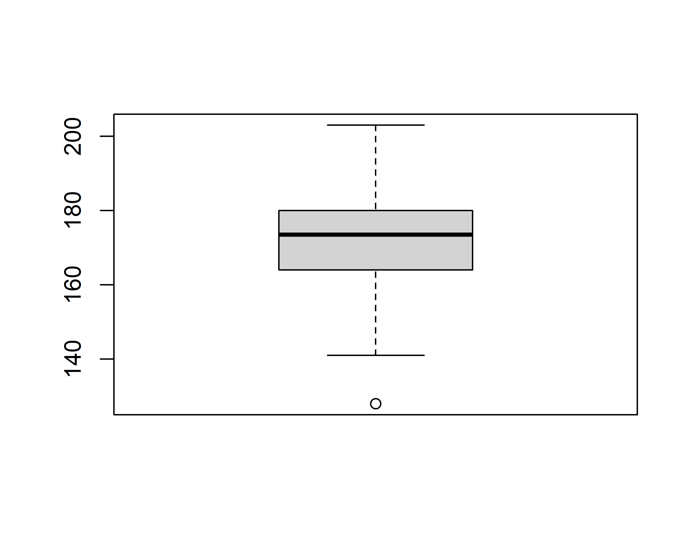
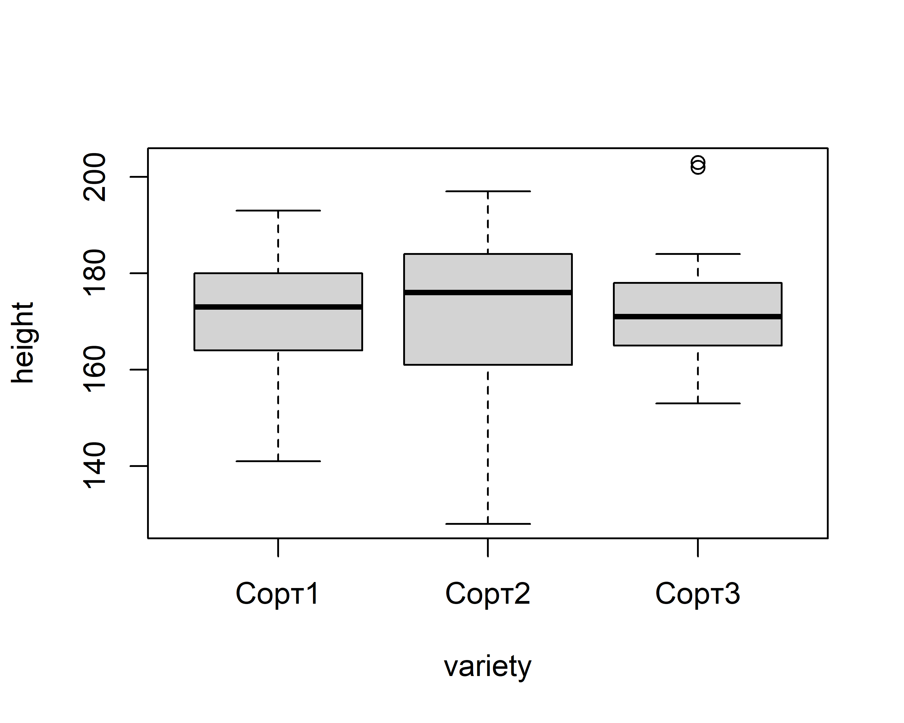
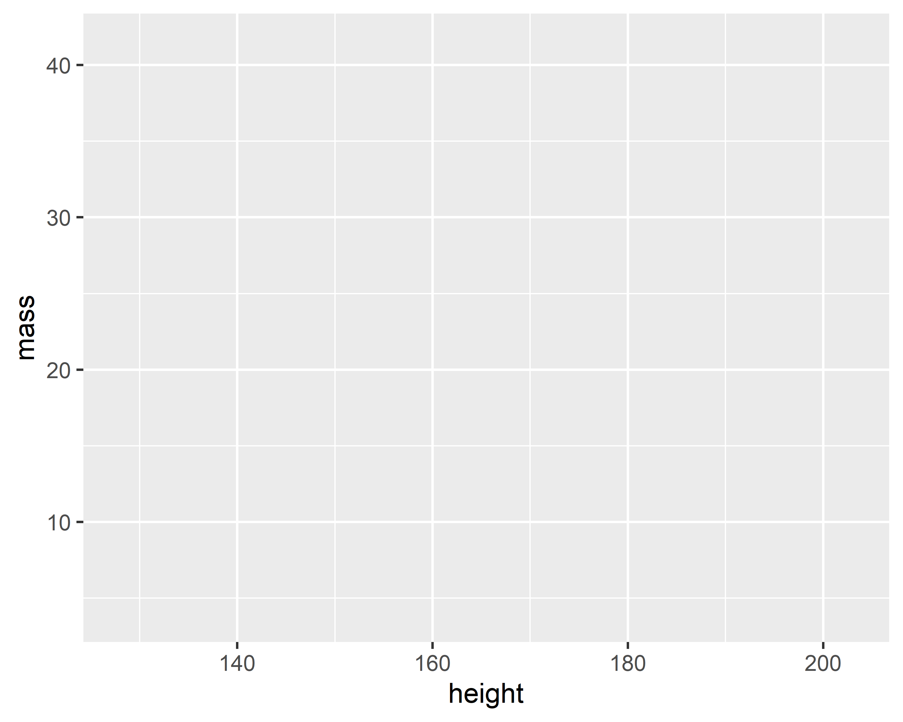
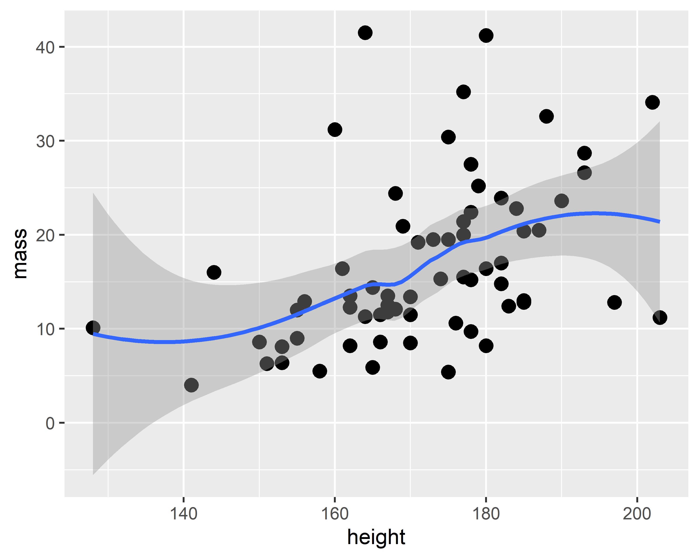

variety – сорт, height – высота растений, mass – масса, cl – длина центрального соцветия, pcl – число стручков на соцветии, sp – количество семян в стручке.
Введение в ggplot2, из чего состоит грамматика графики: aes, geoms, scales, theme.
Основные геомы.
Пример построения графика с помощью ggplot2
Какие можно вспомнить виды графиков?
Диаграмма рассеяния (scatterplot)
Гистограмма (histogram)
Барплот (barplot)
Чем барплот отличается от гистограммы?
Гистограммы для непрерывных величин, а барплоты для категориальных.
Боксплот (boxplot)
Скрипичная диаграмма (violin plot)
Pie chart
Диаграмма Венна
Heatmap, density plot, upset, flowchart и много чего еще…
Графики с помощью base R
Диаграмма рассеяния с помощью функции plot()
Функция plot() принимает на вход разные входные данные, начнем с колонки height датасета df.
plot(df$height)

Здесь по оси X - порядковый номер элемента, по Y - значение height.
Диаграмма рассеяния с помощью функции plot()
Отрисуем зависимость высоты height юнитов от массы mass. Как думаете, какую мы ожидаем зависимость?
plot(df$height, df$mass)

Точка соответствует каждому растению и его параметрам.
Мы наблюдаем положительную зависимость между высотой и массой.
Гистограммы (histogram)
Отрисуем гистограмму по колонке height датасета df.
hist(df$height)

Что значат столбики гистограммы?
Гистограммы (histogram)
Можно подкрасить столбики.
hist(df$height, col="coral", border="blue")
Цвета можно задавать в виде названий или RGB-кодов.
Боксплоты
boxplot(df$height)

Боксплоты по категориям
boxplot(height ~ variety, df)

ggplot2 - лучший пакет для визуализации в R
ggplot2 - grammar of graphics plot
Подход к построению графиков в ggplot2 принципиально отличается от обычных пакетов визуализации (matplotlib, seaborn в питоне).
Фишка ggplot2 состоит в применении языка грамматики графики - набора правил для построения графиков.
Такой подход дает огромную гибкость и возможность создания и кастомизации практически любого графика. Пакет опирается на книгу The Grammar of Graphics (Leland Wilkinson).
Слои в ggplot2
Компоненты графика:
данные (data)
аэстетики (aes)
геомы (geom)
шкалы (scales)
разбивка facets
оформление (theme)
Начнем с создания основы графика
ggplot(df)
Часто пишут с помощью пайпов: df %>% ggplot(), однако сейчас не будем усложнять.
Добавим aes()
ggplot(df, aes(x = height, y = mass))

aes() отражает, какие переменные и как мы собираемся использовать в графике. Здесь мы прописали, что по X будет height, по Y mass.
Теперь нужно задать, в виде какого геома переменные будут отражены на графике.
Добавим geom_
ggplot(df, aes(x = height, y = mass))+geom_point(size =4)
geom_point() - отрисовывает переменные, поданные в аэстетики (aes), в виде точек. Получилась обычная диаграмма рассеяния!
Добавим регрессионную линию с помощью geom_smooth()
ggplot(df, aes(x = height, y = mass))+geom_point(size =4)+geom_smooth()

По умолчанию линия не прямая, пытается максимально приблизить точки.
Добавим регрессионную прямую с помощью geom_smooth(method = 'lm')
ggplot(df, aes(x = height, y = mass))+geom_point(size =4)+geom_smooth(method ='lm')
В этом случае строится классическая регрессия.
Добавим variety растений с помощью цвета color в aes()
ggplot(df, aes(x = height, y = mass, color = variety))+geom_point(size =4)+geom_smooth(method ='lm')
Можно усложнять график, например добавить форму (shape) для точек и отразить другие качественные переменные. Однако в нашем случае другие переменные у нас количественные.
Как же можно отразить несколько (>2) количественных переменных на одном графике?
Как делать не надо
3D-график является плохой практикой и не рекомендуется к использованию.
Использование других параметров точек в качестве дополнительной оси
Мы можем использовать цвет, размер точек для отражения дополнительных переменных.
ggplot(df, aes(x = height, y = mass, color = variety))+geom_point(aes(size = cl))
Используем цвет в виде количественной оси
ggplot(df, aes(x = height, y = mass, shape = variety))+geom_point(aes(size = cl, color = sp))
Возможно получилось не очень информативно, лучше разделить по видам на фасетки (чуть дальше).
aes(), которые в функции ggplot будут применены для всех дальнейших геомов. aes() в конкретном геоме будут применены только для этого геома.
Барплот - geom_bar()
Стандартная задача отрисовать средние и пределы погрешности для статьи или презентации. Для этого нам нужно преобразовать исходные данные - посчитать среднее и стандартное отклонение. Используем tidyverse-подход group_by() + summarise().